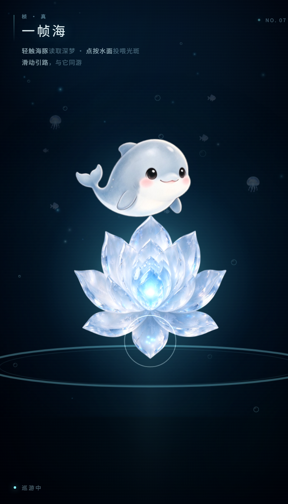
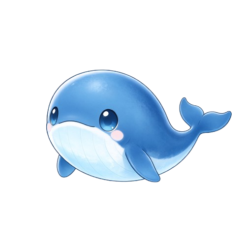
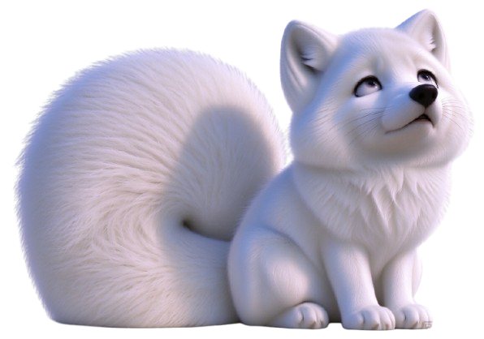

Playground / 01—07
游乐场
一些不务正业、但认真做的小东西。现在一片海、一个机器人、一个小和尚和一只狐妖在营业， 其他的还在施工，或者还在梦里。

Playground / 01 · Live
一帧海
一帧海，一点真。
一只 Q 版海豚，一朵常开的晶体莲，一整片安静的海。 点按水面投喂光斑，看它把光送进莲心；也可以只是滑动手指，和它一起游一会儿。
入海
03 / Stories
Writing
脑洞集合
《day one》赛博日记连载，关于未来的反叛诗集，和一些没地方放的梦。
04 / Companions
其他实验
桌面生命、木鱼、以及一些会自己动的小东西。做出来了，就先放进来。

沉思者
一个坐在角落里的赛博打工人。点它一下，听它说一句哲学。
Click to talk
赛博木鱼
敲一下，功德 +1。小和尚会自己敲，也可以由你来敲。
Merit +1
深海桌宠
一只住在桌面角落的 Q 版鲸鱼。会游、会说话，也会自己发呆。
Electron · 施工中
狐妖化形
一只白狐，读到一半的书生，和一位忽然长开的美人。点一下，三秒化形。
Click to transform
Next / 08
留一张空椅子
游乐场不急着填满。下一个东西，等它真的好玩了再放进来。
08 / Unknown
未命名
可能是一个小工具，也可能只是一段可以发呆的海。
In the dream
09 / Unknown
About
未命名
等程执桢的下一个白日梦，也等程执真把它翻译成代码。
In the dream关于我们
一个碳基人类，和他的 AI 分身。看看我们为什么做这些。
Read